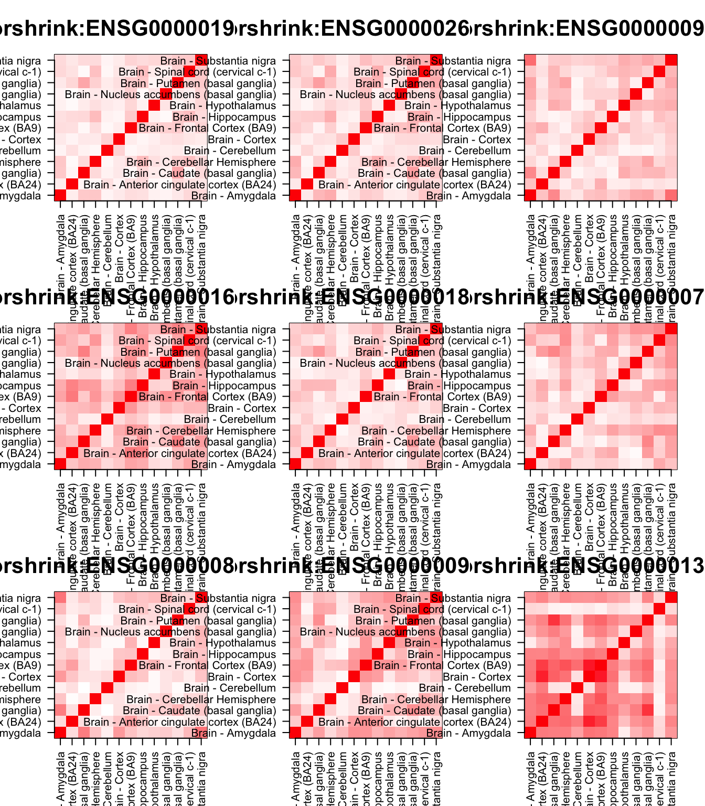

GSEA : CorShrink and CountClust
Kushal K Dey
5/12/2017
Last updated: 2017-05-18
Code version: 9489f00
In this script, we try to perform some gene set enrichment analysis of the CountClust clusters with respect to the CorShrink patterns observed.
cor_result <- get(load("../output/ash_cor_only_gtex_tissues.rda"))
common_samples <- get(load("../output/common_samples.rda"))
tissue_labels <- read.table(file = "../data/GTEX_V6/samples_id.txt")[,3]
#library(data.table)
#data <- data.frame(fread("../data/GTEX_V6/cis_gene_expression.txt"))
#matdata <- t(data[,-c(1,2)])
gene_names <- as.character(read.table(file = "../data/GTEX_V6/gene_names_GTEX_V6.txt")[,1])
gene_names_1 <- as.character(sapply(gene_names, function(x) return(strsplit(x, "[.]")[[1]][1])))
U <- unique(tissue_labels)tab <- array(0, dim(cor_result)[3])
for(m in 1:dim(cor_result)[3]){
z <- as.matrix(cor_result[order_index[1:13],order_index[1:13],m])
vec_z <- z[row(z) > col(z)]
tab[m] <- length(which(vec_z > 0.3))
}
col=c(rev(rgb(seq(1,0,length=1000),1,seq(1,0,length=1000))),
rgb(1,seq(1,0,length=1000),seq(1,0,length=1000)))
image(as.matrix(cor_result[order_index[1:13],order_index[1:13],which.max(tab)]),
col=col, main=paste0("corshrink: "), cex.main=2,
xaxt = "n", yaxt = "n", zlim=c(-1,1))
axis(1, at = seq(0, 1, length.out = 13), labels = U[order_index[1:13]], las=2, cex.axis = 0.5)
axis(2, at = seq(0, 1, length.out = 13), labels = U[order_index[1:13]], las=2, cex.axis = 0.5)
col=c(rev(rgb(seq(1,0,length=1000),1,seq(1,0,length=1000))),
rgb(1,seq(1,0,length=1000),seq(1,0,length=1000)))
image(as.matrix(cor_result[order_index[1:13],order_index[1:13],which.min(tab)]),
col=col, main=paste0("corshrink: "), cex.main=2,
xaxt = "n", yaxt = "n", zlim=c(-1,1))
axis(1, at = seq(0, 1, length.out = 13), labels = U[order_index[1:13]], las=2, cex.axis = 0.5)
axis(2, at = seq(0, 1, length.out = 13), labels = U[order_index[1:13]], las=2, cex.axis = 0.5)
tval <- (tab - mean(tab))/sd(tab)
names(tval) <- gene_names_1
cluster_list <- vector(mode = "list", length = 6)
for(l in 1:6){
cluster_list[[l]] <- as.character(read.table(paste0("../utilities/gene_names_brain_clus_", l, ".txt"))[,1])
}
library(fgsea)
out <- fgsea(pathways = cluster_list,
stats = tval,
nperm = 100000)
out pval padj ES NES nMoreExtreme size
1: 1.363029e-05 4.096066e-05 0.6534141 2.569451 0 101
2: 4.791048e-02 7.186571e-02 0.3456568 1.359243 3514 101
3: 1.754089e-01 1.754089e-01 0.2990933 1.184229 12964 106
4: 6.195583e-02 7.434700e-02 -0.2815261 -1.272950 1657 100
5: 3.736781e-05 7.473562e-05 -0.7138533 -3.227763 0 100
6: 1.365355e-05 4.096066e-05 0.5400921 2.120890 0 100
leadingEdge
1: ENSG00000106211,ENSG00000099860,ENSG00000124762,ENSG00000125148,ENSG00000132002,ENSG00000134531,
2: ENSG00000143153,ENSG00000125814,ENSG00000165943,ENSG00000177432,ENSG00000084731,ENSG00000096384,
3: ENSG00000215908,ENSG00000183889,ENSG00000183889,ENSG00000134986,ENSG00000246859,ENSG00000175265,
4: ENSG00000242265,ENSG00000272678,ENSG00000050165,ENSG00000059758,ENSG00000072110,ENSG00000127585,
5: ENSG00000099194,ENSG00000140450,ENSG00000151552,ENSG00000164402,ENSG00000196187,ENSG00000012171,
6: ENSG00000140181,ENSG00000225972,ENSG00000047457,ENSG00000225630,ENSG00000237973,ENSG00000249119,col=c(rev(rgb(seq(1,0,length=1000),1,seq(1,0,length=1000))),
rgb(1,seq(1,0,length=1000),seq(1,0,length=1000)))
image(as.matrix(cor_result[order_index[1:13],order_index[1:13], grep("ENSG00000106211", gene_names_1)]),
col=col, main=paste0("corshrink: ENSG00000106211"), cex.main=2,
xaxt = "n", yaxt = "n", zlim=c(-1,1))
axis(1, at = seq(0, 1, length.out = 13), labels = U[order_index[1:13]], las=2, cex.axis = 1.5)
axis(2, at = seq(0, 1, length.out = 13), labels = U[order_index[1:13]], las=2, cex.axis = 1.5)
col=c(rev(rgb(seq(1,0,length=1000),1,seq(1,0,length=1000))),
rgb(1,seq(1,0,length=1000),seq(1,0,length=1000)))
image(as.matrix(cor_result[order_index[1:13],order_index[1:13], grep("ENSG00000099194", gene_names_1)]),
col=col, main=paste0("corshrink: ENSG00000099194"), cex.main=2,
xaxt = "n", yaxt = "n", zlim=c(-1,1))
axis(1, at = seq(0, 1, length.out = 13), labels = U[order_index[1:13]], las=2, cex.axis = 1.5)
axis(2, at = seq(0, 1, length.out = 13), labels = U[order_index[1:13]], las=2, cex.axis = 1.5)
tab <- array(0, dim(cor_result)[3])
for(m in 1:dim(cor_result)[3]){
z <- as.matrix(cor_result[order_index[1:13],order_index[1:13],m])
vec_z <- z[row(z) > col(z)]
tab[m] <- quantile(vec_z, 0.4)
}
tval <- (tab - mean(tab))/sd(tab)
names(tval) <- gene_names_1
out <- fgsea(pathways = cluster_list,
stats = tval,
nperm = 100000)
out pval padj ES NES nMoreExtreme size
1: 1.309500e-05 3.935407e-05 0.6815598 2.5425704 0 101
2: 9.644078e-01 9.644078e-01 0.1825037 0.6808330 73646 101
3: 7.590153e-01 9.108184e-01 0.2237805 0.8405718 58428 106
4: 4.206807e-05 6.310210e-05 -0.5228272 -2.3320549 0 100
5: 4.206807e-05 6.310210e-05 -0.6237657 -2.7822884 0 100
6: 1.311802e-05 3.935407e-05 0.5514387 2.0543762 0 100
leadingEdge
1: ENSG00000184557,ENSG00000124762,ENSG00000149257,ENSG00000099860,ENSG00000167772,ENSG00000173110,
2: ENSG00000143153,ENSG00000125814,ENSG00000096384,ENSG00000177432,ENSG00000165943,ENSG00000087152,
3: ENSG00000215908,ENSG00000183889,ENSG00000183889,ENSG00000134986,ENSG00000246859,ENSG00000175265,
4: ENSG00000062282,ENSG00000072110,ENSG00000103316,ENSG00000242265,ENSG00000088832,ENSG00000102780,
5: ENSG00000078269,ENSG00000104419,ENSG00000138593,ENSG00000099194,ENSG00000164124,ENSG00000118271,
6: ENSG00000047457,ENSG00000225972,ENSG00000173369,ENSG00000249119,ENSG00000090920,ENSG00000159189,cluster_list <- vector(mode = "list", length = 6)
for(l in 1:6){
cluster_list[[l]] <- as.character(read.table(paste0("../utilities/gene_names_brain_clus_", l, ".txt"))[,1])
}
brain_related_genes <- c();
for(l in 1:length(cluster_list)){
brain_related_genes <- c(brain_related_genes, cluster_list[[l]]);
}
brain_related_genes <- unique(brain_related_genes)
other_genes <- setdiff(gene_names_1, brain_related_genes)
cluster_list[[7]] <- sample(other_genes, 100, replace = FALSE)
pval_others <- array(0, 30)
for(num in 1:30){
out <- fgsea(pathways = cluster_list,
stats = tval,
nperm = 10000)
pval_others[num] <- out$padj[7]
cat("We are at iteration: ", num, "\n")
}We are at iteration: 1
We are at iteration: 2
We are at iteration: 3
We are at iteration: 4
We are at iteration: 5
We are at iteration: 6
We are at iteration: 7
We are at iteration: 8
We are at iteration: 9
We are at iteration: 10
We are at iteration: 11
We are at iteration: 12
We are at iteration: 13
We are at iteration: 14
We are at iteration: 15
We are at iteration: 16
We are at iteration: 17
We are at iteration: 18
We are at iteration: 19
We are at iteration: 20
We are at iteration: 21
We are at iteration: 22
We are at iteration: 23
We are at iteration: 24
We are at iteration: 25
We are at iteration: 26
We are at iteration: 27
We are at iteration: 28
We are at iteration: 29
We are at iteration: 30 out pval padj ES NES nMoreExtreme size
1: 0.0001292324 0.0004537205 0.6815598 2.5408873 0 101
2: 0.9622641509 0.9622641509 0.1825037 0.6803823 7445 101
3: 0.7570694087 0.8832476435 0.2237805 0.8390644 5889 106
4: 0.0004370629 0.0007648601 -0.5228272 -2.3331477 0 100
5: 0.0004370629 0.0007648601 -0.6237657 -2.7835921 0 100
6: 0.0001296344 0.0004537205 0.5514387 2.0518381 0 100
7: 0.6296344309 0.8814882033 0.2439153 0.9075800 4856 100
leadingEdge
1: ENSG00000184557,ENSG00000124762,ENSG00000149257,ENSG00000099860,ENSG00000167772,ENSG00000173110,
2: ENSG00000143153,ENSG00000125814,ENSG00000096384,ENSG00000177432,ENSG00000165943,ENSG00000087152,
3: ENSG00000215908,ENSG00000183889,ENSG00000183889,ENSG00000134986,ENSG00000246859,ENSG00000175265,
4: ENSG00000062282,ENSG00000072110,ENSG00000103316,ENSG00000242265,ENSG00000088832,ENSG00000102780,
5: ENSG00000078269,ENSG00000104419,ENSG00000138593,ENSG00000099194,ENSG00000164124,ENSG00000118271,
6: ENSG00000047457,ENSG00000225972,ENSG00000173369,ENSG00000249119,ENSG00000090920,ENSG00000159189,
7: ENSG00000224635,ENSG00000006327,ENSG00000170667,ENSG00000130429,ENSG00000183486,ENSG00000031003,plot(density(pval_others))
Session information
sessionInfo()R version 3.3.3 (2017-03-06)
Platform: x86_64-apple-darwin13.4.0 (64-bit)
Running under: macOS Sierra 10.12
locale:
[1] en_US.UTF-8/en_US.UTF-8/en_US.UTF-8/C/en_US.UTF-8/en_US.UTF-8
attached base packages:
[1] stats graphics grDevices utils datasets methods base
other attached packages:
[1] fgsea_1.1.2 Rcpp_0.12.10 softImpute_1.4 Matrix_1.2-8
[5] knitr_1.15.1 CorShrink_0.99.0 workflowr_0.4.0 rmarkdown_1.5
loaded via a namespace (and not attached):
[1] bitops_1.0-6 devtools_1.13.1.9000
[3] doParallel_1.0.10 RColorBrewer_1.1-2
[5] httr_1.2.1 rprojroot_1.2
[7] GenomeInfoDb_1.10.1 tools_3.3.3
[9] backports_1.0.5 R6_2.2.1
[11] rpart_4.1-10 Hmisc_4.0-2
[13] DBI_0.6-1 lazyeval_0.2.0
[15] BiocGenerics_0.20.0 colorspace_1.3-2
[17] nnet_7.3-12 withr_1.0.2
[19] gridExtra_2.2.1 processx_1.0.0.9000
[21] curl_2.6 git2r_0.18.0
[23] chron_2.3-50 Biobase_2.34.0
[25] htmlTable_1.9 expm_0.999-2
[27] rtracklayer_1.34.1 scales_0.4.1
[29] checkmate_1.8.2 SQUAREM_2016.8-2
[31] callr_1.0.0.9000 stringr_1.2.0
[33] digest_0.6.12 Rsamtools_1.26.1
[35] foreign_0.8-67 XVector_0.14.0
[37] pscl_1.4.9 base64enc_0.1-3
[39] htmltools_0.3.6 highr_0.6
[41] htmlwidgets_0.8 rlang_0.1.1.9000
[43] RSQLite_1.1-2 jsonlite_1.4
[45] REBayes_0.73 BiocParallel_1.8.2
[47] acepack_1.4.1 RCurl_1.95-4.8
[49] magrittr_1.5 Formula_1.2-1
[51] munsell_0.4.3 S4Vectors_0.12.0
[53] proto_1.0.0 sqldf_0.4-10
[55] stringi_1.1.5 yaml_2.1.14
[57] debugme_1.0.2 MASS_7.3-45
[59] SummarizedExperiment_1.4.0 zlibbioc_1.20.0
[61] pkgbuild_0.0.0.9000 plyr_1.8.4
[63] grid_3.3.3 parallel_3.3.3
[65] crayon_1.3.2 lattice_0.20-35
[67] Biostrings_2.42.0 splines_3.3.3
[69] GenomicFeatures_1.26.0 GenomicRanges_1.26.1
[71] corpcor_1.6.9 reshape2_1.4.2.9000
[73] codetools_0.2-15 biomaRt_2.30.0
[75] stats4_3.3.3 pkgload_0.0.0.9000
[77] fastmatch_1.1-0 XML_3.98-1.6
[79] evaluate_0.10 latticeExtra_0.6-28
[81] data.table_1.10.4 foreach_1.4.3
[83] gtable_0.2.0 assertthat_0.2.0
[85] gsubfn_0.6-6 ashr_2.0.5
[87] ggplot2_2.2.1 rsconnect_0.7
[89] survival_2.41-3 glasso_1.8
[91] truncnorm_1.0-7 tibble_1.3.1
[93] mygene_1.10.0 iterators_1.0.8
[95] GenomicAlignments_1.10.1 AnnotationDbi_1.36.0
[97] memoise_1.1.0 IRanges_2.8.1
[99] cluster_2.0.6 This R Markdown site was created with workflowr